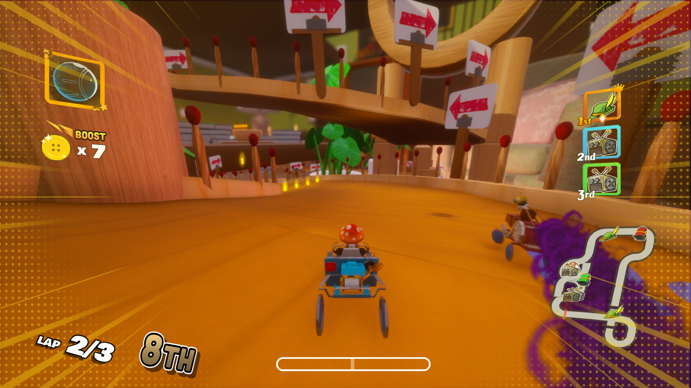
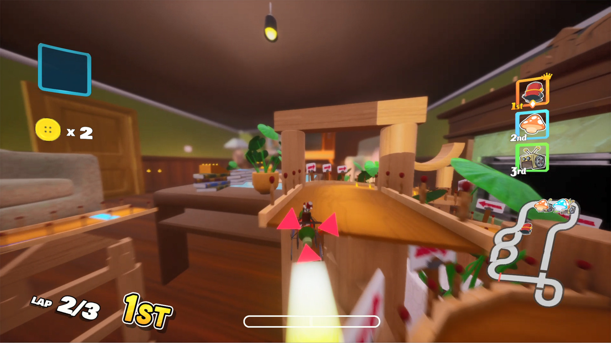
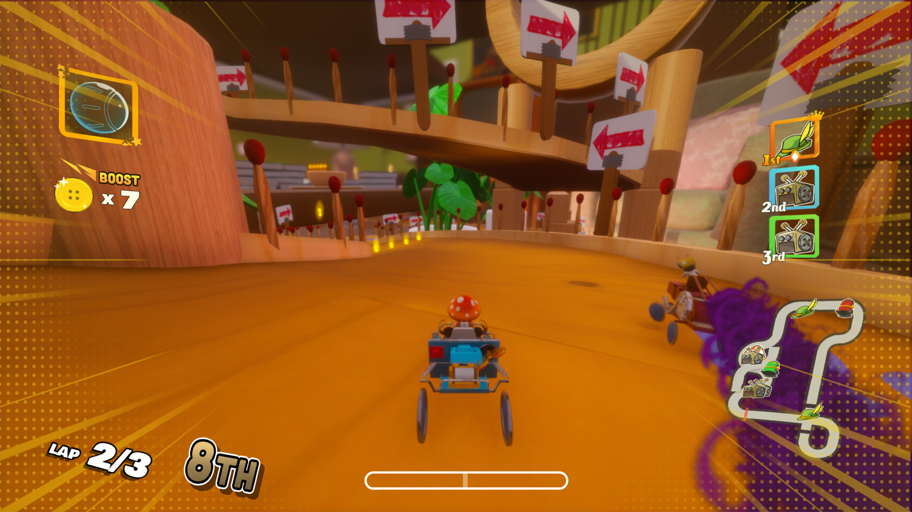
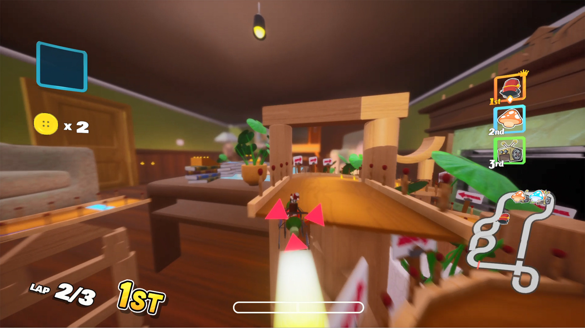

HaberDashers
February - May 2020
Download for free on Steam!
HaberDashers is a console-style arcade (kart) racer for the PC in which players control miniature humanoid inhabitants of an everyday home, racing past outsized household items and through rooms as they compete against human and AI opponents with both driving skills and item pick-ups.
This project was created by our entire cohort, 56 students, using Unreal Engine 4. I worked on the BPACT team ( Builds, Performance, Architecture, Camera and Tools ...basically any programming task that isn't physics, AI, gameplay logic or audio) and spent most of my time working on the architecture and data flow of the game. It was my responsibility to work with most of the other teams to make sure every component of our game could communicate with the others and our design was clean enough to support adding new features quickly.

 



Data Management and Architecture
My main role on the project was to develop a system to transfer information between different game components efficiently. I spent a lot of time developing our GameInstance and GameMode blueprints to manage each racer's state throughout the game. Having a centralized place to store and retrieve kart information became invaluable as our project grew and multiple teams needed to access information about the game state and karts. I got a lot of great experience working with the other teams and seeing the project from their perspective while adding features to support their work. I learned how critical it is to talk with the consumers of a tool to ensure the functionality delivers what is needed.
To support custom kart selection and maintaining points during Grand Prix mode, all of the kart data is persisted in GameInstance and then before each race a kart spawn component creates each kart from that data. While waiting on the menu system to be implemented, I added a little tool to specify the number of player and AI karts spawned in each level to help speed up testing times. I learned how important the interface of a tool can be after my first implementation led to a lot of questions from the other developers about how to use it. A rework after talking with some of the level designers made the tool more intuitive and saved me the time of answering questions about it as often. My goal of a simple component that anyone could use to spawn in the karts was accomplished and our testing times were imrpoved.
Environmental Hazard System
Our game has a collection of hazards that appear on each track, each with slightly different behavior, but all sharing some common qualities. I worked with one of the level designers to create some template environmental hazards that could be used to create all the various hazards in the game. By adding certain shared functionality, like AI avoidance and kart damage, directly into the base class, each level designer had less to worry about when creating a new hazard and there was no chance that a critical piece of base functionality would be forgotten in a new hazard.
Build System
I worked with the lead programmer to update and improve the build system that had been used for past Guildhall games. The build system was comprised of a collection of batch scripts that would update the repo from perforce, build the game, and upload the build to a shared server for the team to download. We decided to port the existing functionality to python scripts since we have more experience as a cohort in python than bash. One completely new addition that I made to the build system was to define an environment config file that each script references when running their operations. This allowed us to run the scripts on any machine easily and avoid hardcoding the script path references to the build machine's environment. Having the power to build the game outside of Unreal on my local machine greatly sped up development, especially when we were tracking down bugs that only appeared in the packaged version of the game.